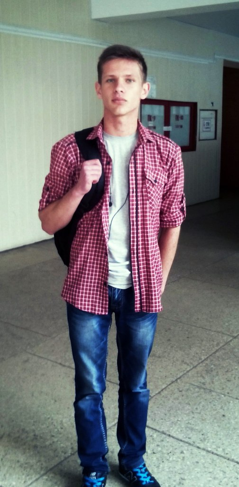
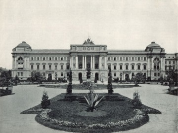
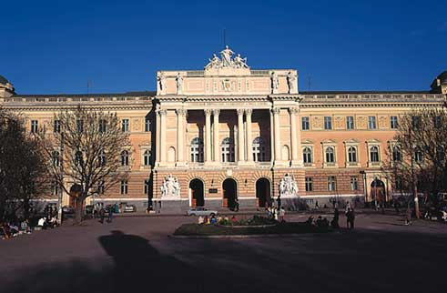

 Народився 18 жовтня 1997 року в селі Колки, Маневичького району, в Укваїні в родині фермерів. У 2002 році я пішов у перший клас Колківсьокої ЗОШ-ліцей , яку закінчив у 2014 році, отримавши атестат з середнім балом 11.1. У 2014 році вступив до Львівського національного університету імені Івана Франка на факультет електроніки за спеціальністю «Комп’ютерні науки та інформаційнітехнології ». Тепер я студент третього курсу. Під час навчання у школі брав участь зібранні Оркестру.
Улюблене заняття це гра у волейбол. Часто не відмовляюся і від комп'ютерних ігор таких я Сs 1.6,WoW,Dota 2 Дарк Соулс. У вільний від навчання час люблю переглядати Стріми цікавих мені людей.Львівський національний університет імені Івана Франка? (у 1918–1939 рр. Університет Яна Казимира) — один з найстаріших у Східній Європі та Україні університет. Один з найпрестижніших університетів України. Львівську академію з правами університету утворено 1661 року указом короля Яна ІІ Казимира, який надавав єзуїтській колегії у Львові «гідність академії і титул університету». У 1773 році орден єзуїтів заборонено, університет закрито. Відновлено 1784 року, називався Йосифінський університет. У 1805–1817 — ліцей. У 1817 відновлено як Університет Франца I.

В епоху ренесансу Львів був відомим освітнім містом Центральної Європи, в якому діяло просвітницько-релігійне товариство «Львівське братство» (1439) та друкарня Степана Дропана (1460). Як і перший університет Центральної Європи — Карловий (Прага, Чехія), що бере свої початки зі світської школи (1348), Львівський університет (тепер імені Івана Франка) своє літочислення розпочинає зі створення у листопаді 1372 року міської школи хлопчиків, яку заснував титулярний «Король Русі» Владислав Опольчик спільно з орденом Францисканців, котрі поряд з місіонерством вели також і освітню діяльність. У XVI — XVII ст. центрами культурного життя на українських землях були церковні братства. Користуючись підтримкою міщан і духовенства, вони сприяли поширенню ідей гуманізму, розвитку науки і шкільництва. Найдавнішим православним в Україні було Успенське братство (ставропігійське з 1586 року) у Львові, яке стало визначним українським культурним православним центром. З 1586 р. у Львові діяла братська школа, яка була середнім навчальним закладом. Тут вивчали церковнослов'янську, грецьку, латинську і польську мови, математику, граматику, риторику, астрономію, філософію та інші дисципліни. Члени Львівського братства планували навіть перетворити свій «гімнасіон» (так вони називали цю школу) у вищий навчальний заклад. У Львівській братській школі працювали і здобули освіту визначні діячі української культури кінця XVI — першої половини XVII ст.: Лаврентій Зизаній (Кукіль) і його брат Степан, Кирило Транквіліон-Ставровецький, Іван Борецький та ін. До середини XVII ст. в Україні не було жодного вищого навчального закладу. Шляхетська Польща чинила опір створенню тут вищої школи, яка могла б стати небезпечним політичним і культурним центром. Українська молодь мусіла здобувати вищу освіту в стінах Краківського й інших європейських університетів.
 На 1997/1998 навчальний рік на денній формі навчалось 11 649 студентів, у тому числі 2980 на умовах повної компенсації затрат на навчання, на заочній формі навчалося 3680 студентів, з них 2543 студентів-платників. Повний курс навчання тривав у цей період 5 років. Основною формою підготовки наукових кадрів є аспірантура, де на 1997/1998 навчальний рік готували фахівців з 89 спеціальностей гуманітарного та природничого профілів, в аспірантурі на денній формі навчалось 505 осіб, заочній — 206 осіб. У жовтні 1999 року Львівський державний університет імені Івана Франка отримав статус національного.[6] Станом на кінець 2014 р. у Львівському університеті навчалось 19 709 студентів, у тому числі на заочній формі — 4233, у коледжах — 1339. У 2014 р. 64 студенти отримали різні іменні стипендії, зокрема академічну стипендію ім. В. М. Чорновола, академічну стипендію ім. М. С. Грушевського, академічну стипендію ім. Т. Г. Шевченка та інші. У 2014 р. команда факультету прикладної математики зайняла 2 місце на ІХ відкритій міжнародній студентській олімпіаді з програмування ім. С. О. Лебєдєва-В. М. Глушкова «КРІ-Open». Навчальний процес у 2014/2015 н. р. у Львівському університеті забезпечують 2036 науково-педагогічних працівники, з них 220 докторів наук. В університеті діє 134 кафедри, на кінець 2014 р. в аспірантурі навчалось 773 особи, з них на заочній — 341 особа.